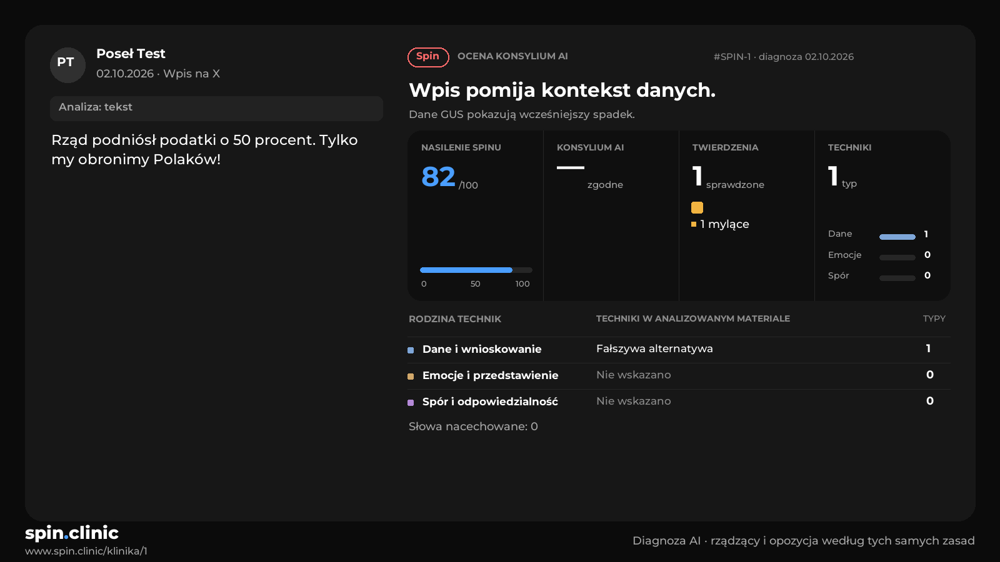

spin.clinic to serwis, w którym AI ocenia wpisy polityków pod kątem spinu, według tych samych zasad dla rządzących i opozycji. Pytamy, która forma wpisu na X, karty z wynikiem i opisu jest dla Ciebie najczytelniejsza.
W każdym pytaniu wybierasz jedną odpowiedź. Możesz wrócić i ją zmienić. Na końcu zobaczysz wyniki.
Przykład na jednej diagnozie (Jan Kowalski, PiS, spin 70/100).

Każdy wpis ma dołączoną kartę diagnozy z wynikiem, jak ta obok.
Oceniasz sam tekst wpisu.
W aplikacji X karta ma około 500 pikseli szerokości. Porównaj czytelność wyniku i nazwiska.
To jedyne, co widać przy szybkim przewijaniu.
Pierwszy ekran na telefonie. Liczba to nasz znak rozpoznawczy, ale część osób woli samo słowo.
Tak głosują wszyscy do tej pory. Twoje odpowiedzi są zaznaczone na zielono.